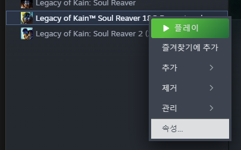
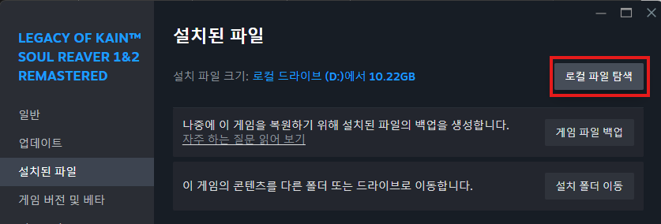
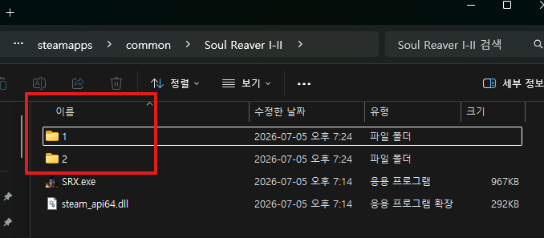
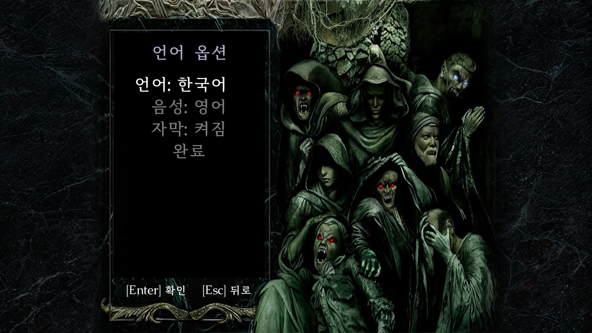
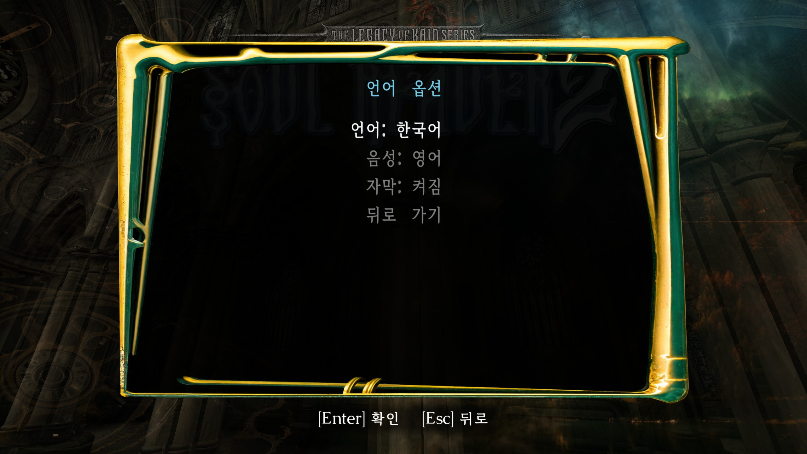
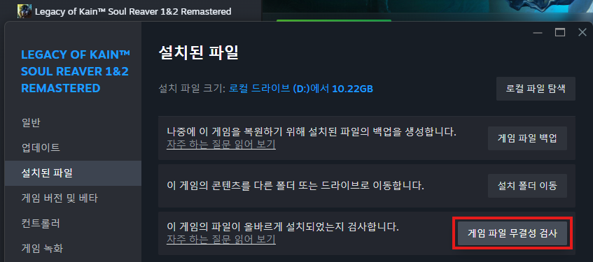

게임 폴더 확인
Steam에서 Legacy of Kain™ Soul Reaver 1&2 Remastered를 오른쪽 클릭한 뒤 속성 - 설치된 파일 - 로컬 파일 탐색을 눌러 파일 위치를 엽니다.
Korean translation project
소울 리버 1&2 리마스터 한글 패치입니다.
리소스 파일만 변경하여 게임 업데이트 후에도 별도로 패치를 다시 하지 않아도 됩니다.
연극적, 희곡적인 대사가 많아 최대한 원문의 느낌을 살리려 노력했습니다.
다만, 느낌을 살리기 위해 일부 직역하거나 문장 순서를 억지로 유지한 부분도 있으니,
어색하거나 개선할 점은 하단의 의견을 남겨주시면 최대한 반영하겠습니다.
어둠의 연대기에서 줄이 벗어나는건, 한글과 영어 폭 문제로 길어서 잘리는 부분만 제거하였습니다.
차후 여유가 있을 때 수정하겠습니다.


Steam에서 Legacy of Kain™ Soul Reaver 1&2 Remastered를 오른쪽 클릭한 뒤 속성 - 설치된 파일 - 로컬 파일 탐색을 눌러 파일 위치를 엽니다.

다운로드한 압축 파일을 열어 폴더를 기존 파일에 덮어씁니다.


소울리버 1 혹은 2의 언어 설정에서 중국어를 선택하면 한글 패치가 적용됩니다.

Steam에서 Legacy of Kain™ Soul Reaver 1&2 Remastered를 오른쪽 클릭한 뒤 속성 - 설치된 파일 - 로컬 파일 탐색을 실행하세요.
| 공개일 | 변경 내역 |
|---|---|
| 2026-09-06 | 최초 공개 |
Feedback
어색한 표현, 오역, 버그, 제안을 남겨주시면 확인 후 반영하겠습니다.